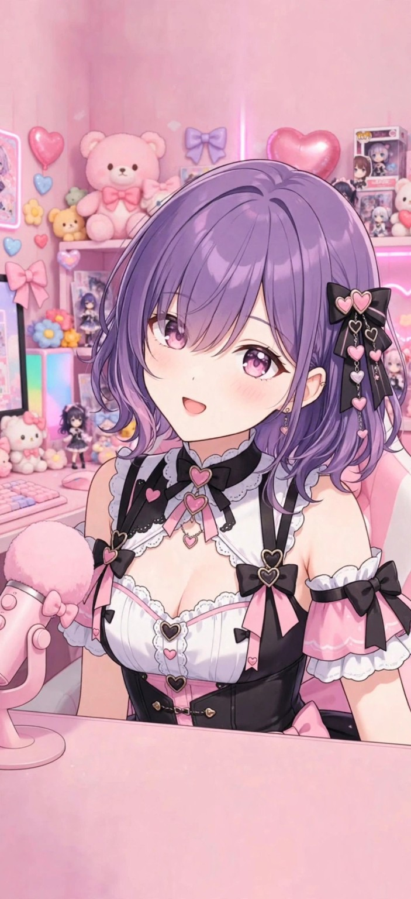

💜 紫乃しずく 💜

恥ずかしがり屋だけど、おしゃべりは大好き…！
🎤 しずくの声（無料テスト）
まず「声を試す」を押してみてね。スマホの音量も確認してね。
端末にある日本語音声を使用します。声質は端末によって違い、AIの追加音声料金はかかりません。
💜 しずく専用ボイス（ElevenLabs）
自分で作った「紫乃しずく」の声を使用します。音声を生成するとElevenLabsのクレジットを消費します。
最初はOFF。ONにすると、AIの返事が届くたびに音声を生成します。テスト用の合言葉でAIに接続しているときだけ使えます。 自動再生できない場合は下の▶を押してください。
ONにすると直近10件のAI会話だけをこのブラウザ内に保存し、再読み込み後も会話を続けられます。合言葉やAPIキーは保存しません。共用端末ではOFFにしてね。
現在はお試し会話モード。AI接続はテスト用の合言葉が必要です。
AIテストではAPI利用料金が発生します。合言葉はページを閉じると破棄され、保存されません。